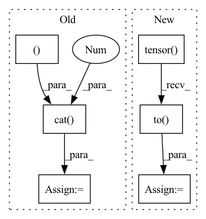

Pattern ID :14750

Before Change
if i == 0:
true_scores = score[i][loc_len[i] - 1].reshape(1, -1)
else:
true_scores = torch.cat(
(true_scores, score[i][loc_len[i] - 1].reshape(1, -1)), 0)
return true_scores
def predict(self, batch):
return self.forward(batch)
After Change
out = torch.cat((hidden_state, context), 2)
// 因为是补齐了的，所以需要找到真正的 out
origin_len = batch.get_origin_len("current_loc")
final_out_index = torch.tensor(origin_len) - 1
final_out_index = final_out_index.reshape(final_out_index.shape[0], 1, -1)
final_out_index = final_out_index.repeat(1, 1, 2*self.hidden_size).to(self.device)
out = torch.gather(out, 1, final_out_index).squeeze(1) // batch_size * (2*hidden_size)
out = self.dropout(out)
y = self.fc_final(out) // batch_size * loc_size
In pattern: SUPERPATTERN
Frequency: 3
Non-data size: 6
Instances
Fragment ID: 48504092
Project Name: libcity/bigscity-libcity
Commit Name: ec61c9cd984d1c86ee715380ed3b65b4222c8d1f
Time: 2021-05-06
Author: 33283819+WenMellors@users.noreply.github.com
File Name: trafficdl/model/trajectory_loc_prediction/DeepMove.py
M Class Name: DeepMove
N Class Name: DeepMove
M Method Name: forward(2)
N Method Name: forward(2)
M Parent Class: AbstractModel
N Parent Class: AbstractModel
M File Name: trafficdl/model/trajectory_loc_prediction/DeepMove.py
N File Name: trafficdl/model/trajectory_loc_prediction/DeepMove.py
M Start Line: 122
M End Line: 175
N Start Line: 152
N End Line: 163
'>
Before Change
if i == 0:
true_scores = score[i][loc_len[i] - 1].reshape(1, -1)
else:
true_scores = torch.cat(
(true_scores, score[i][loc_len[i] - 1].reshape(1, -1)), 0)
return true_scores
def predict(self, batch):
return self.forward(batch)
After Change
out, out_len = pad_packed_sequence(out, batch_first=True)
// out = out.permute(1, 0, 2)
origin_len = batch.get_origin_len("current_loc")
final_out_index = torch.tensor(origin_len) - 1
final_out_index = final_out_index.reshape(final_out_index.shape[0], 1, -1)
final_out_index = final_out_index.repeat(1, 1, self.hidden_size).to(self.device)
out = torch.gather(out, 1, final_out_index).squeeze(1) // batch_size * hidden_size
out = F.selu(out)
out = self.dropout(out)
y = self.fc(out)
score = F.log_softmax(y, dim=1) // calculate loss by NLLoss
return score
def predict(self, batch):
'>
Fragment ID: 48504093
Project Name: libcity/bigscity-libcity
Commit Name: ec61c9cd984d1c86ee715380ed3b65b4222c8d1f
Time: 2021-05-06
Author: 33283819+WenMellors@users.noreply.github.com
File Name: trafficdl/model/trajectory_loc_prediction/RNN.py
M Class Name: RNN
N Class Name: RNN
M Method Name: forward(2)
N Method Name: forward(2)
M Parent Class: AbstractModel
N Parent Class: AbstractModel
M File Name: trafficdl/model/trajectory_loc_prediction/RNN.py
N File Name: trafficdl/model/trajectory_loc_prediction/RNN.py
M Start Line: 87
M End Line: 97
N Start Line: 84
N End Line: 94
'>
Before Change
print(zero_plane.shape)
print(emission_pred_acc_x_length.shape)
emiss_pred_with_zeros = torch.cat((zero_plane, emission_pred_acc_x_length), 2)
phns = phns.to(device)
// manipulate y tensor, and then "torch.gather"
phns_copied = phns.unsqueeze(1).expand(-1, fb_max_length, -1)//.to(device)
After Change
mask_phn_lens = (
torch.arange(U_max).to(device)[None, :] < phn_lens_abs[:, None]
)
emiss_pred_useful = torch.where(
mask_phn_lens[:, None, :],
emiss_pred_useful,
torch.tensor([1e-38]).to(device),
)
emiss_pred_useful = emiss_pred_useful.permute(0, 2, 1)
'>
Fragment ID: 48504091
Project Name: speechbrain/speechbrain
Commit Name: cc600a8d98ce0d7f63e3ceef4dce88dbd7928a63
Time: 2020-06-01
Author: rastorge@eos18.server.mila.quebec
File Name: speechbrain/alignment/aligner.py
M Class Name: ViterbiAligner
N Class Name: ViterbiAligner
M Method Name: make_emiss_pred_useful(5)
N Method Name: make_emiss_pred_useful(5)
M Parent Class:
N Parent Class:
M File Name: speechbrain/alignment/aligner.py
N File Name: speechbrain/alignment/aligner.py
M Start Line: 104
M End Line: 123
N Start Line: 104
N End Line: 133